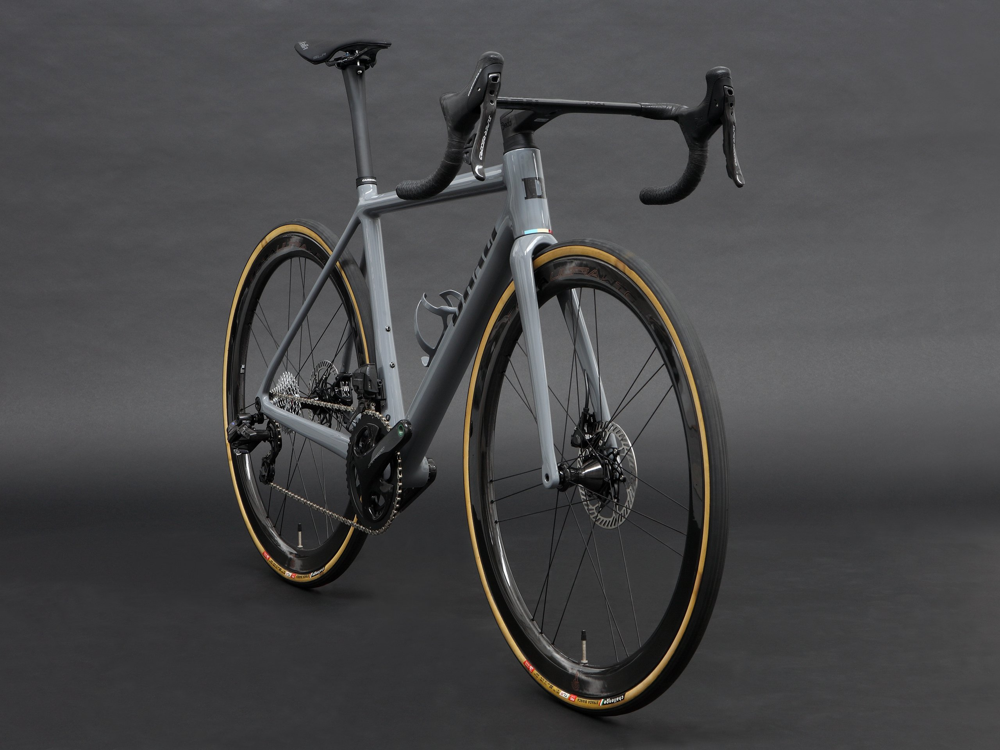
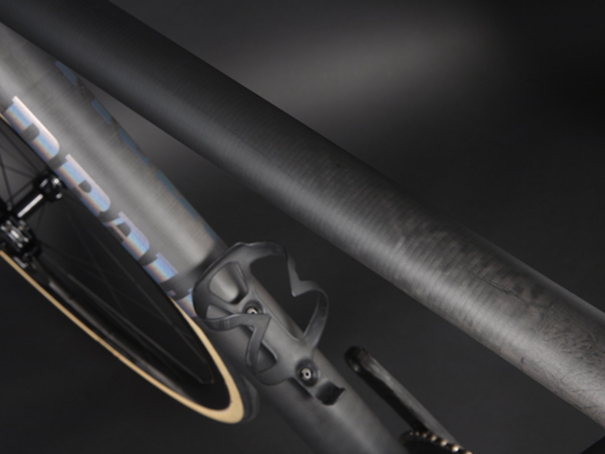
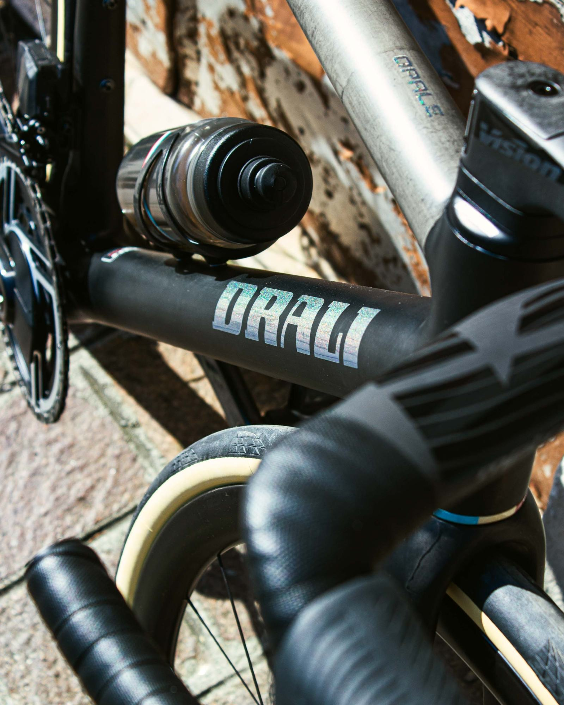
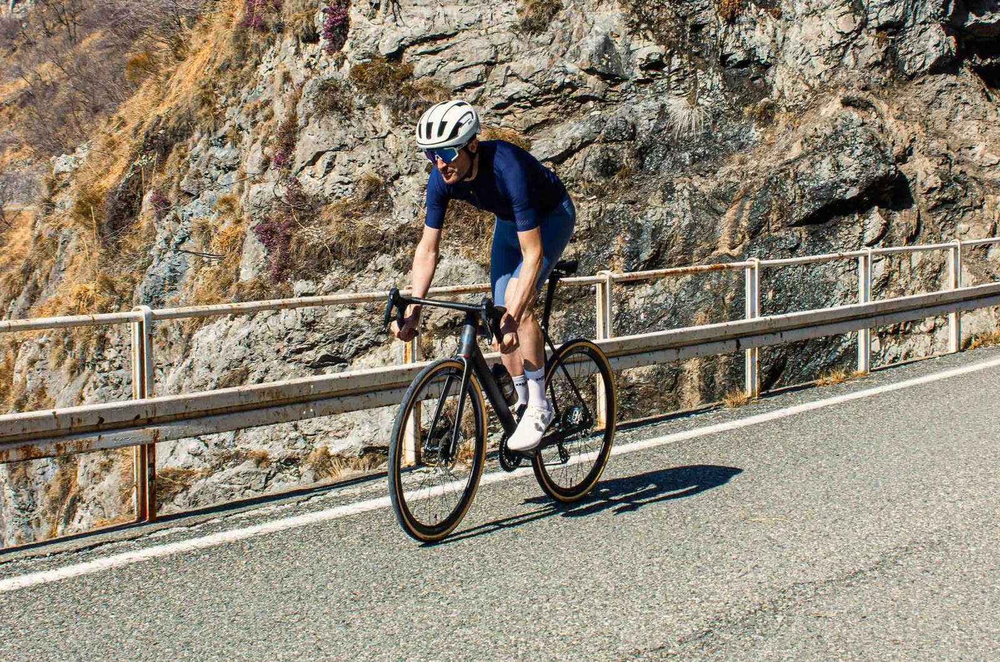
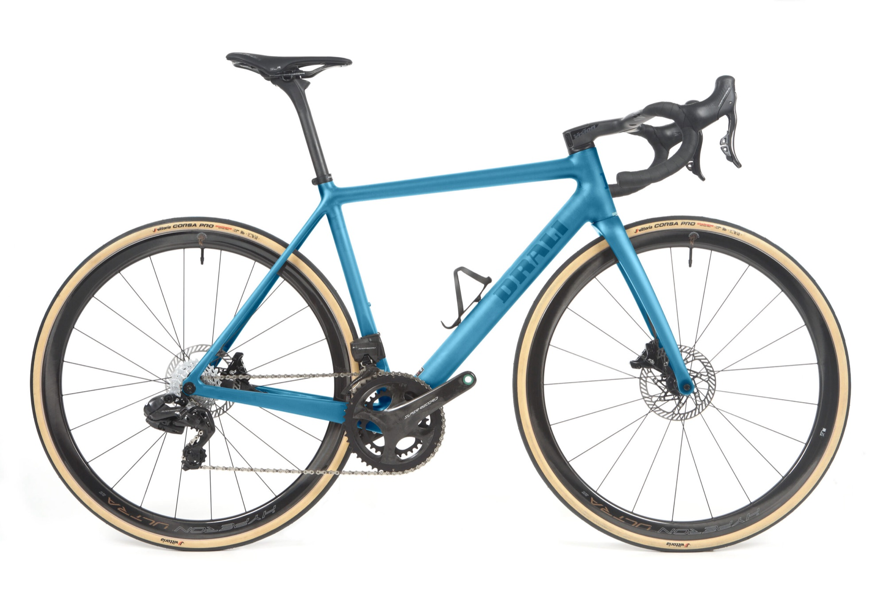
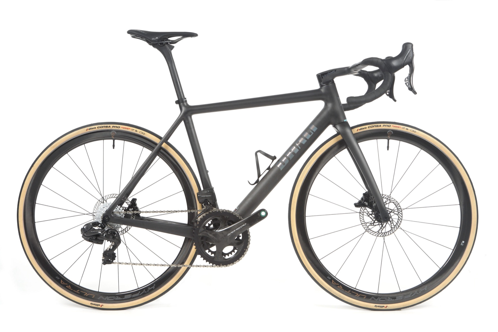
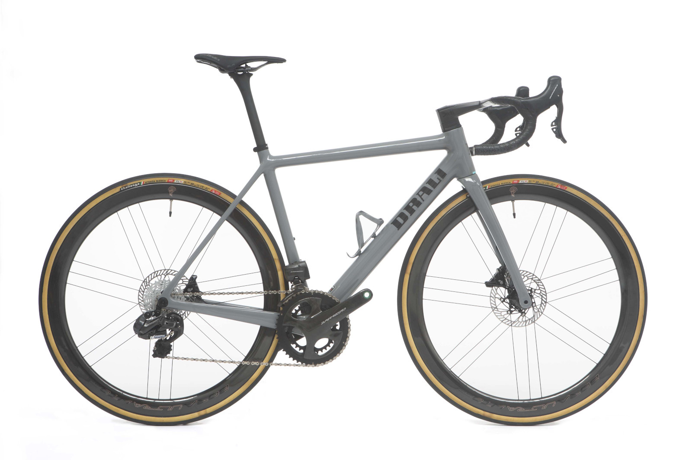
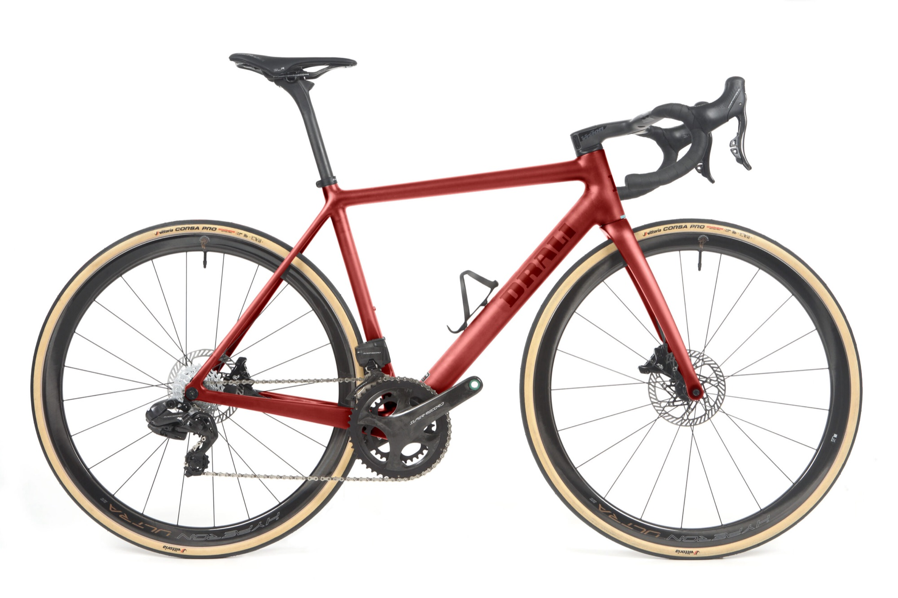

Choisissez un coloris
Drali Milano
RouteLa version qui mise sur la légèreté, pour ceux qui aiment les ascensions, la rapidité et l'exclusivité. Cadre « tube à tube » fabriqué en Italie.
À partir de7 690 € TTC
Prendre rendez-vousVous aimerez aussi